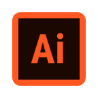
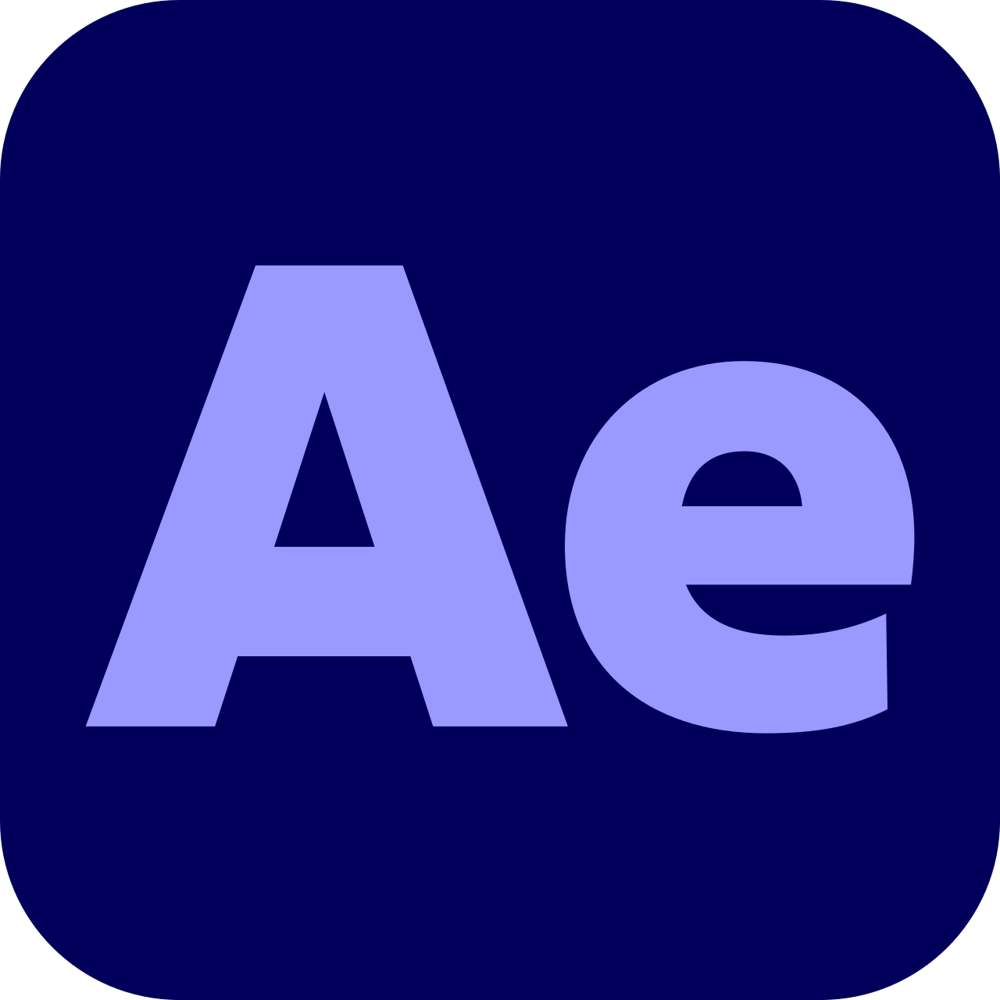

Sobre mim
Artista digital focado em
animação, criação de assets e
design
UI/UX, com conhecimento prático
de HTML e CSS.
Atualmente me dedico a produção
de animações, ilustrações
digitais
e ao desenvolvimento de
interfaces. Busco sempre
aprimorar minhas
habilidades e explorar novas
possibilidades.
Produções
Clique nos botões abaixo para navegar
Tecnologias




